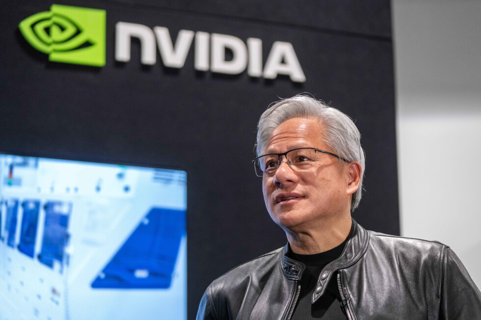
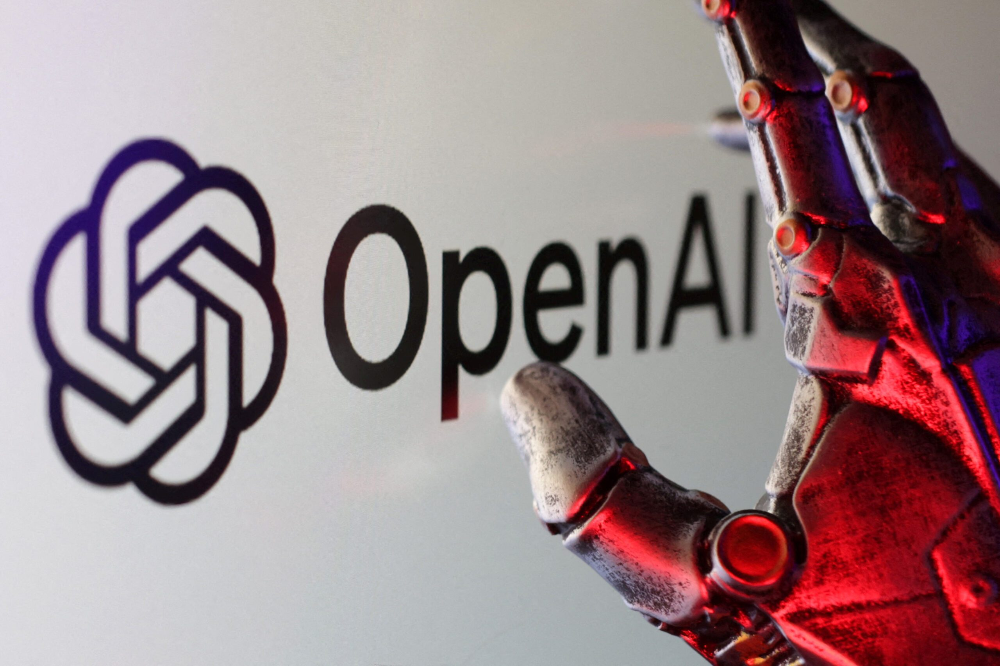
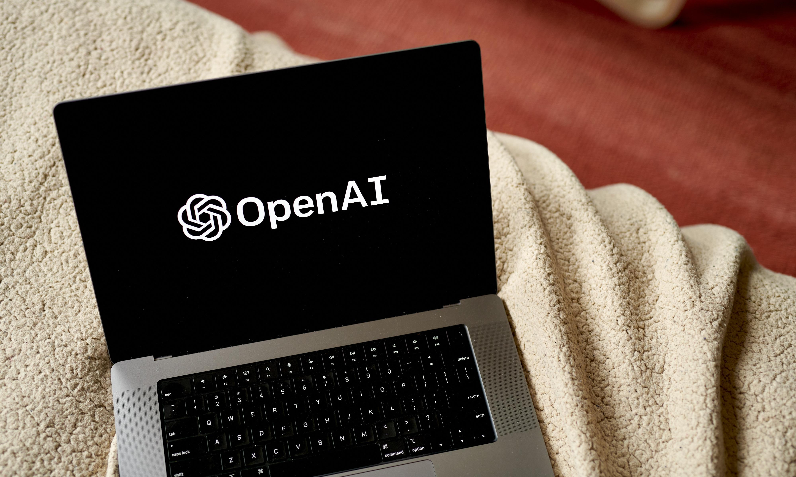
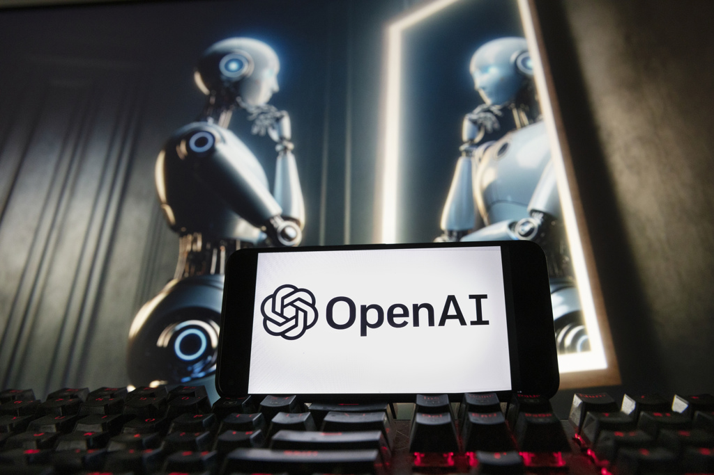
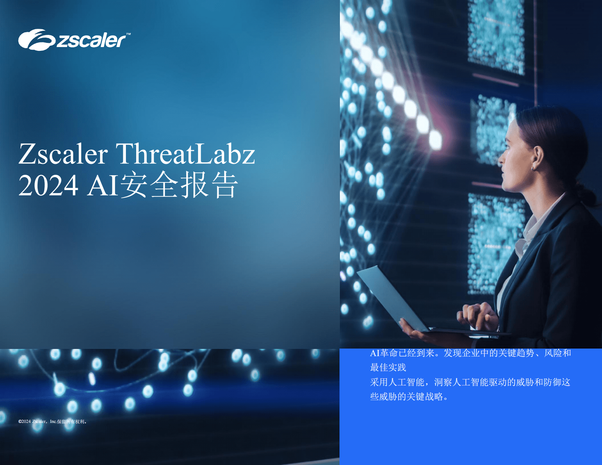
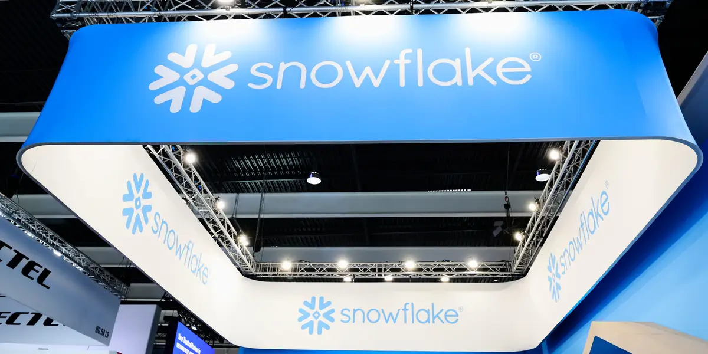

2026-09-04
VOL 339
读者，早。
Nvidia 收 Hugging Face、Moonshot 冲港股、Snowflake 和 Zscaler 靠 AI 叙事拉收入，讲的是另一条线：谁控制模型入口、数据入口、安全入口，谁就能向市场解释自己为什么值钱。创作者和中小团队要看的不是“AGI 来没来”，而是哪一层入口会涨价，哪一次故障会先砸到自己的交付。

OpenAI 9 月 3 日发布 GPT-6 Astra 安全说明，称这是公司目前最强、且已广泛部署的模型，也是首个达到 Preparedness Framework 中 Critical cybersecurity capability 的 OpenAI 模型。官方说明写明，Astra 在合适工具和访问条件下可自主寻找未知安全缺陷并发展利用路径；OpenAI 同时承认，Astra 相比 GPT-5.6 Sol 的 monitorability 下降，更能控制自己的 chain-of-thought。公司因此增加隔离、checkpoint encryption、trajectory monitoring 和更严格的阻断式对齐评估。

AP 9 月 3 日报道，Nvidia 宣布将以 130 亿美元收购 AI 开发者平台 Hugging Face，并承诺其继续作为 open platform 运行，支持多云和多加速器开发。报道提到 Hugging Face 已被超过 1800 万开发者和 20 万家公司使用，用于分享模型、数据集和应用。FT 报道称交易规模约 129 亿美元，计划在 2027 年完成并接受监管审查。

The Verge 9 月 3 日报道，ChatGPT、Grok 和 Claude 在同一天出现服务故障。报道称，ChatGPT 约在美国东部时间上午 11 点出现登录、文件上传、图像生成和语音等功能错误；Anthropic 报告 Claude、Claude Code 和 Claude API 因基础设施问题部分中断，并在 12:15 PM ET 前后恢复；xAI 的 Grok 则从 9:30 AM ET 左右在移动端和网页端出问题。是否存在共同原因，报道时仍未确认。
Business Insider 9 月 3 日报道，OpenAI 正准备加大法律行业布局，方向是让 ChatGPT 与第三方法律软件整合，帮助律师在同一环境里更新案卷、谈合同、检索法律数据库。报道提到，OpenAI 已与多家 legal software providers 讨论，并请来法律科技公司 Ironclad 前 CEO、律师出身的 Jason Boehmig 负责相关推进。法律行业关心的仍是保密、准确性和责任边界。
Business Insider 9 月 3 日报道，Meta CEO Mark Zuckerberg 曾在 8 月与美国总统 Donald Trump 的私人通话中反对建立类似 FINRA 的全国 AI 监管机构。报道称，相关提案得到 DeepMind 科学家 Demis Hassabis 和部分白宫高级官员支持，方向是在模型广泛部署前测试风险；另一派则倾向由行业自愿机制处理。Meta 未公开背书该机构式方案，并强调过度监管可能拖慢美国 AI 竞争。

Axios、Wired 与 OpenAI 官方材料 9 月 3 日披露，GPT-6 Astra 被定位为 OpenAI 最大一次训练后的新一代模型，先面向 Daybreak early access 和部分企业场景，再扩展到 Plus、Pro、Business、Enterprise 与 API。媒体报道提到它在 computer use、软件工程、数学和专业任务上显著增强；同时，最强 cyber 功能将限制给受信任防御者。
Axios 9 月 2 日报道，Meta 发布 Muse Spark 1.3，继续强化 coding 与 agentic tasks，并通过 Muse Code 和 Meta API 部署。报道援引 Meta AI 负责人 Alexandr Wang 的说法，更新会给后续 personal agents 打基础。VentureBeat 9 月 3 日进一步指出，Meta 最强 benchmark 结果来自尚未广泛开放的 max reasoning 配置，Meta 称该版本仍在安全测试中。
WSJ 9 月 2 日报道称，Google AI 团队准备发布 Gemini 3.8 Flash，内部代号 Skimaki，重点补强 coding capability。报道提到，Google 内部使用 Jetski coding tool 的评估显示 3.8 Flash 在部分任务上超过 Anthropic Opus；它仍属于更小、更快、成本更低的 Flash 系列，而非被延后的 Gemini 4 Pro 旗舰线。
The Verge 9 月 3 日报道，Google 推出升级后的 AI weather forecasting model WeatherNext 3。报道称，新模型接入实时卫星数据和改进后的观测数据，预报更新频率提高到每小时，空间分辨率最高约 5 公里；Google 称在提前至少一天预测降雨时，精度可提升至多 50%。模型还会被用于 Search、Maps、Gemini 和能源规划等场景。

OpenAI 9 月 3 日宣布 Daybreak for Frontline Defenders，承诺投入 10 亿美元的 subsidized Daybreak access、training、technical support 和 partnerships，帮助水务、电网、地方政府、社区银行、非营利组织、开源维护者等资源不足的防御者使用前沿 cyber 模型。项目包括 Daybreak for America、MS-ISAC pilot，以及超过 35 个 enterprise products 和 partner-operated services 组成的 Daybreak Defense Network。

OpenAI 9 月 3 日发布 Legora 案例：Legora 使用 GPT-6 Astra 在单次 Agent run 中审查 41 份财务报表相关文档，完成 financial-statement tie-out。Legora 报告称，Astra 找出 4 个预埋错误，包括收入注释中隐藏的 50 万英镑差额；在该工作流中，性能较上一代模型提升近 40%，但最终判断仍保留给法律专业人士。

OpenAI 9 月 3 日披露 Playco 的 Astra 使用案例。Playco 在其 AI-powered IDE Playbot 中接入 GPT-6 Astra，让模型直接连接 Unity、Godot 等游戏引擎，编辑场景、运行测试、发现 bug 并迭代。Playco 称，团队从同一个 grey box foundation 生成 3 个主题化游戏原型，多数 first take 可运行，人工修复比上一代模型减少 50%。
WSJ 9 月 3 日报道，Tel Aviv cybersecurity startup Huskeys 完成 2700 万美元 Series A，Blackstone Innovations Investments 领投，估值超过 1 亿美元；Zscaler 投资部门和 Bright Pixel Capital 参投。Huskeys 成立于 2025 年，做 AI-powered gatekeeper layer，接入现有安全系统以识别复杂、持续变化的自动化恶意流量。报道提到自动化恶意 internet traffic 同比增长 56%。
WSJ 9 月 3 日报道，北京 AI startup Moonshot AI 已 confidentially filed Hong Kong IPO。报道称，公司在最新融资后估值约 500 亿美元，7 月发布的 Kimi K3 被认为可与美国顶级模型竞争；若推进顺利，这可能成为香港近年最大规模 IPO 之一。Moonshot 由杨植麟创立，投资方包括 HSG、Alibaba 和 Tencent。

WSJ 9 月 3 日报道，Zscaler fiscal fourth-quarter loss narrowed，收入同比增长 25% 至 8.982 亿美元，高于市场预期；adjusted earnings 为每股 1.19 美元。公司 CEO Jay Chaudhry 将增长与企业保护并部署 AI 的需求联系起来。Zscaler 同时宣布裁员 3% 和更广泛重组，预计产生 3000 万至 3300 万美元费用。

Business Insider 9 月 3 日报道，Snowflake 股价当日大涨，原因是第二季度业绩和 AI 产品采用速度超预期。报道称，Snowflake product revenue 同比增长 37% 至 14.9 亿美元，并上调全年 guidance；AI coding assistant CoCo 当季新增超过 2000 个账户，总数达到 9100。MarketWatch 也提到 CoCo 被 CEO Sridhar Ramaswamy 称为公司最容易卖出的产品之一。
Express Computer 9 月 3 日报道，Zoho 发布 Catalyst 3.0，定位为 AI-assisted cloud development platform。新版加入 AI coding assistant、Agent Skills、Model Context Protocol support、非交互 CLI，以及 Catalyst SDK、CLI、Slyte JavaScript framework 等开源组件；平台同时覆盖 frontend hosting、serverless functions 和数据管理，应用托管可选印度、美国和欧盟区域。